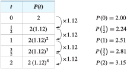
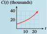

Subsection 2.3 Percent Increase
Exponential growth occurs in other circumstances, too. For example, if the interest on a savings account is compounded annually, the amount of money in the account grows exponentially.
Consider a principal of $100 invested at 5% interest compounded annually. At the end of \(1\) year, the amount is
It will be more useful to write the formula for the amount after \(1\) year in factored form.
With this version of the formula, the calculation for the amount at the end of \(1\) year looks like this:
The amount, $105, becomes the new principal for the second year. To find the amount at the end of the second year, we apply the formula again, with \(P = 105\text{.}\)
Observe that to find the amount at the end of each year, we multiply the principal by a factor of \(1 + r = 1.05\text{.}\) Thus, we can express the amount at the end of the second year as
and at the end of the third year as
At the end of each year, we multiply the old balance by another factor of \(1.05\) to get the new amount. We organize our results into a table, where \(A(t)\) represents the amount of money in the account after \(t\) years. For this example, a formula for the amount after \(t\) years is
| \(t\) | \(P(1 + r)^t\) | \(A(t)\) |
| \(0\) | \(100\) | \(100\) |
| \(1\) | \(100(1.05)\) | \(105\) |
| \(2\) | \(100(1.05)^2\) | \(110.25\) |
| \(3\) | \(100(1.05)^3\) | \(115.76\) |
In general, for an initial investment of \(P\) dollars at an interest rate \(r\) compounded annually, we have the following formula for the amount accumulated after \(t\) years.
Compound Interest.
The amount \(A(t)\) accumulated (principal plus interest) in an account bearing interest compounded annually is
where
This function describes exponential growth with an initial value of \(P\) and a growth factor of \(b = 1 + r\text{.}\)
Note 2.3.6.
The notion of percent increase is often used to describe the growth factor for quantities that grow exponentially. Note carefully the distinction between the percent increase, \(r\text{,}\) and the growth factor, \(b=1+r\text{.}\)
Example 2.3.7.
During a period of rapid inflation, prices rose by \(12\)% over \(6\) months. At the beginning of the inflationary period, a pound of butter cost $\(2\text{.}\)
Make a table of values showing the rise in the cost of butter over the next \(2\) years.
Write a function that gives the price of a pound of butter \(t\) years after inflation began.
How much did a pound of butter cost after \(3\) years? After \(15\) months?
Graph the function you found in part (b).
-
The percent increase in the price of butter is \(12\)% every \(6\) months. Therefore, the growth factor for the price of butter is \(1 + 0.12 = 1.12\) every half-year. If \(P(t)\) represents the price of butter after \(t\) years, then \(P(0) = 2\text{,}\) and every half-year we multiply the price by \(1.12\text{,}\) as shown in the table.
 -
Look closely at the second column of the table. After \(t\) years of inflation, the original price of $\(2\) has been multiplied by \(2t\) factors of \(1.12\text{.}\) Thus,
\begin{equation*} P = 2(1.12)^{2t} \end{equation*} -
To find the price of butter at any time after inflation began, we evaluate the function at the appropriate value of \(t\text{.}\)
\begin{equation*} \begin{aligned}[t] P(\alert{3}) \amp = 2(1.12)^{2(\alert{3})} \\ \amp = 2(1.12)^6 \approx 3.95 \end{aligned} \end{equation*}After \(3\) years, the price was $\(3.95\text{.}\) Fifteen months is \(1.25\) years, so we evaluate \(P(1.25)\text{.}\)
\begin{equation*} \begin{aligned}[t] P(\alert{1.25}) \amp = 2(1.12)^{2(\alert{1.25})} \\ \amp = 2(1.12)^{2.5} \approx 2.66 \end{aligned} \end{equation*}After \(15\) months, the price of butter was $\(2.66\text{.}\)
-
Evaluate the function
\begin{equation*} P(t) = 2(1.12)^{2t} \end{equation*}for several values, as shown in the table below. We plot the points and connect them with a smooth curve to obtain the graph shown in the figure at right below.
\(t\) \(0\) \(2.00\) \(1\) \(2.51\) \(2\) \(3.15\) \(3\) \(3.95\) \(4\) \(4.95\)
In Example 2.3.7, we can rewrite the formula for \(P(t)\) as follows:
Thus, the annual growth factor for the price of butter is \(1.2544\text{,}\) and the annual percent growth rate is \(25.44\)%.
Checkpoint 2.3.8.
In \(1998\text{,}\) the average annual cost of attending a public college was \(\$10,069\text{,}\) and costs were climbing by \(6\)% per year.
Write a formula for \(C(t)\text{,}\) the cost of one year of college \(t\) years after \(1998\text{.}\)
-
Complete the table and sketch a graph of \(C(t)\text{.}\)
\(t\) \(0\) \(5\) \(10\) \(15\) \(20\) \(25\) \(C(t)\) \(\hphantom{0000}\) \(\hphantom{0000}\) \(\hphantom{0000}\) \(\hphantom{0000}\) \(\hphantom{0000}\) \(\hphantom{0000}\) If the percent growth rate remained steady, how much did a year of college cost in \(2005\text{?}\)
If the percent growth rate continues to remain steady, how much will a year of college cost in \(2020\text{?}\)
\(C(t) = 10,069\cdot 1.06^t\)
-
\(t\) \(0\) \(5\) \(10\) \(15\) \(20\) \(25\) \(C(t)\) \(10,069\) \(13,475\) \(18,032\) \(24,131\) \(32,293\) \(43,215\)  $\(15,140\) per year
$\(36,284\)